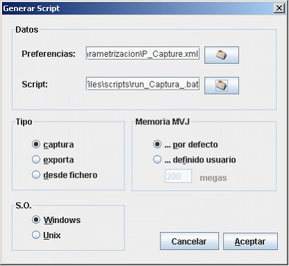
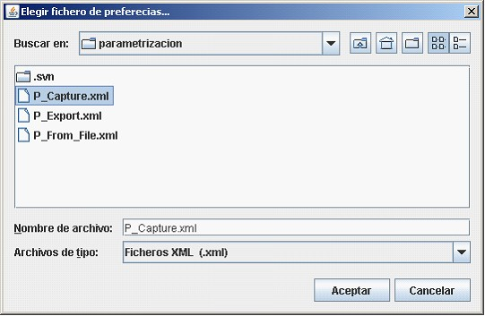
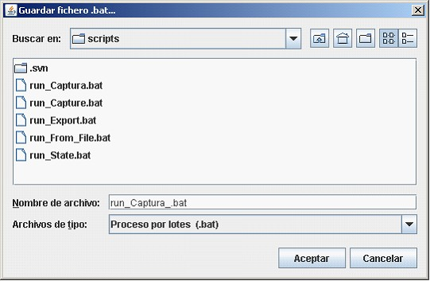
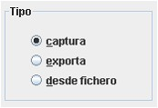
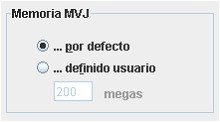
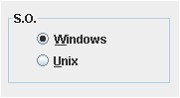

Generar Script
Una vez que realizadas las configuraciones y parametrizaciones comentadas en los apartados anteriores es el momento, de generar los scripts que van a permitir ejecutar la aplicación en modo comando para así obtener el máximo rendimiento de esta herramienta.

Esta ventana está subdividida en cuatro apartados:





Copyright © 2010, <Carlos Mardones Muga>
Created with the Freeware Edition of HelpNDoc: Create HTML Help, DOC, PDF and print manuals from 1 single source